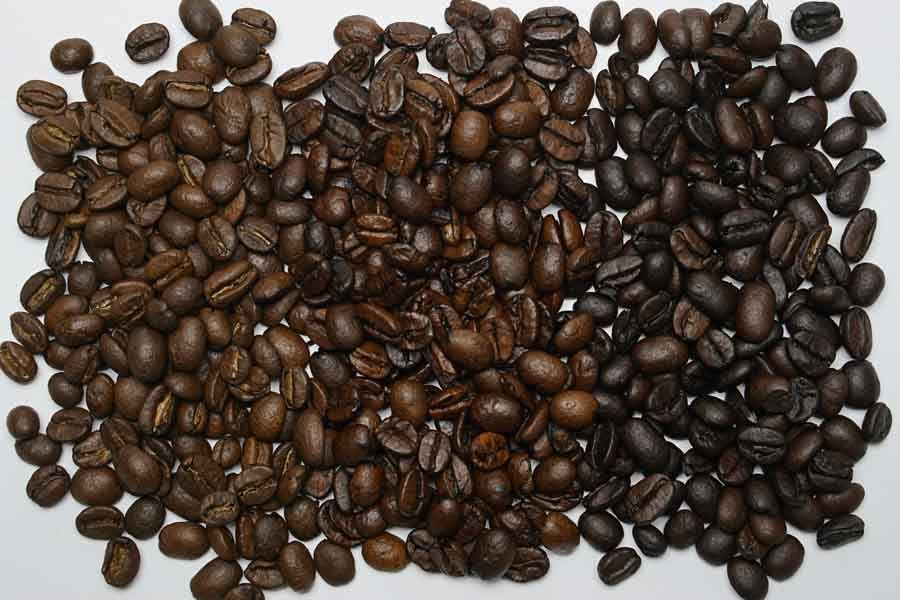

U
店のこと
お店について確認できているのは、所在地とInstagramのアカウントだけです。
FACTS確認できていること
- 店名は「MIKURO CAFE」、業種はカフェ
- 所在地は長野県諏訪市高島1丁目21-16(〒392-0022)
- 電話番号はなし。連絡はInstagramから
- 営業時間・定休日・メニュー・価格・ご予約・駐車場は準備中
THEMEこのサイトの作り(制作側の連想)
屋号の6文字を縦の中心線で二つ折りにすると、M・I・U・Oは左右が重なり、KとRは重なりません。この「折り目」の見方を、各ページの大きな文字に使っています。
制作側の連想で、お店の理念・由来とは無関係です。
